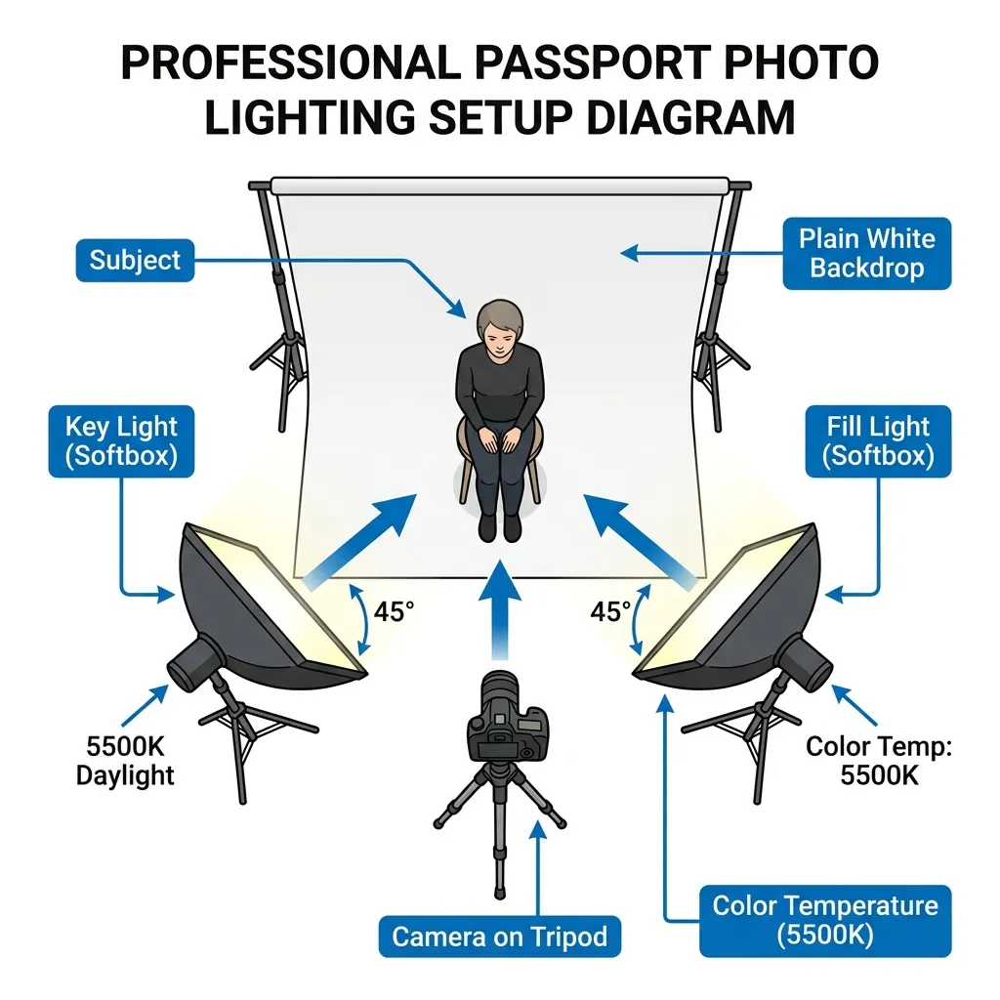

Section 1: The Evolution of Document Photography: A Biometric Revolution
Getting a passport photo taken at a professional studio or commercial pharmacy can cost anywhere from ₹200 to $15 per set. When applying for multi-member family visas or renewing several official credentials simultaneously, these expenses rapidly multiply. Moreover, the absolute lack of artistic control in a standard commercial booth frequently yields unflattering results that you are legally bound to carry on your identification papers for the next ten years. The good news? With a modern smartphone camera, a baseline understanding of photographic physics, and the precise application of geometric crop standards, you can capture a government-compliant, studio-quality passport photo from your living room in under five minutes.
However, executing a compliant photo at home requires a paradigm shift. A passport photograph is no longer a simple family portrait or an aesthetic profile picture. It is a highly regulated, mathematically constrained piece of biometric data. Historically, identification photography was born out of geopolitical crises. Prior to the early 20th century, passports were purely textual, featuring narrative descriptions of the bearer's height, eye color, and distinguishing marks. The outbreak of World War I in 1914 shattered this paradigm. To combat espionage and track foreign nationals, governments rushed to standardize visual identification. The British Nationality and Status of Aliens Act of 1914 was among the first to legally mandate physical photographic attachments. Yet, early regulations were highly informal: subjects posed with family members, wore wide-brimmed hats, held musical instruments, or stood next to their household pets.
Over the subsequent decades, the International Civil Aviation Organization (ICAO)—a specialized agency of the United Nations—gradually assumed the role of global standardizer. The ultimate transformation occurred with the post-9/11 integration of biometric passports (e-passports), which incorporate a contactless RFID microchip. This chip stores digital biographical data along with a raw, high-resolution visual file of the face. Modern borders are increasingly managed not by human customs officers eyeballing a paper document, but by Automated Border Control (ABC) gates. These electronic systems utilize deep-learning Convolutional Neural Networks (CNNs) to measure spatial relationships between distinct facial nodes in real time. A millimeter of misalignment, a slight facial tilt, or an ambient shadow can cause the mathematical validation vector to fail, triggering immediate system rejection, border delays, or application returns.
Section 2: Deciphering the ISO/IEC 19794-5 Biometric Standard
At the heart of global document compliance lies the international standard ISO/IEC 19794-5 (titled Information technology — Biometric data interchange formats — Part 5: Face image data). This standard establishes the rigorous physical, optical, and digital parameters that must be met to ensure that facial recognition algorithms can accurately execute one-to-one matching (verifying that the traveler matches the passport chip data) and one-to-many searching (checking visa databases for security clearance).
To comply with ISO/IEC 19794-5, a photograph must respect three core levels of mathematical geometry:
1. Geometric Head Scale and Frame Ratios
The vertical height of the head, measured from the lowest point of the chin (gnathion) to the highest virtual point of the crown (the vertex of the skull, mathematically ignoring voluminous hairstyles or hats), must occupy a strict percentage of the total image height.
- International standard (ICAO / Schengen / UK / India): The face height must be between 70% and 80% of the total vertical height of the printed photo. For a standard 45 mm high photo, this dictates a face height of exactly 32 mm to 36 mm.
- United States Standard: The face must occupy between 50% and 69% of the vertical frame height. On a 2x2 inch (51x51 mm) print, the head height must range between 1.00 inch and 1.375 inches (25 mm to 35 mm).
2. Eye Line Coordinate Matrix
Automated face matching begins by locating the horizontal axis of the eyes. Under the ISO standard, the imaginary line passing through the geometric centers of both pupils must be:
- Perfect horizontal alignment with a roll tilt angle of **less than ±3 degrees**.
- Positioned within the upper half of the photo, specifically between 50% and 70% of the vertical distance measured from the bottom edge of the image. For US applications, the eye line is strictly bounded between 1.125 inches and 1.375 inches (28 mm and 35 mm) from the bottom border.
- Centering: The vertical midline of the face (passing through the nasal bridge and philtrum) must be perfectly centered on the horizontal midline of the frame, with a lateral deviation tolerance of **less than ±2%** of the total image width.
3. Three-Dimensional Rotation Tolerance Limits
Any deviation from a direct frontal pose distorts the perceived spatial distances between facial landmarks, altering the unique biological signature calculated by the software. ISO/IEC 19794-5 defines limits across the three rotational axes:
| Axis of Rotation | Physical Movement | Max Allowable Tolerance | Biometric Consequence of Failure |
|---|---|---|---|
| Yaw | Horizontal turning (shaking head left/right) | ≤ ±5° | Asymmetry in cheek width; hides ear details; compromises inter-pupillary measurements. |
| Pitch | Vertical nodding (tilting head up/down) | ≤ ±5° | Compromises nose-to-chin distance; exposes under-chin or forehead slant; blocks eye view. |
| Roll | Lateral tilting (tilting ear to shoulder) | ≤ ±3° | Skewed pupil baseline; fails primary horizontal matching filters; causes crop bounds truncation. |
4. Ear Visibility, Eyebrows, and Jawline Exposure
While some nations (like India and several Schengen consulates) strictly request that both ears be completely visible to assess overall head structure, the absolute international requirement under ISO standards is that the **entire face oval must be completely unobstructed**.
This means the jawline must have high contrast against the neck, the forehead must be exposed (no heavy bangs or fringes covering the eyebrows), and hair must not drape over the eyes or cheeks. Eyebrows are critical biological features used by matching software to calculate brow-ridge geometry; photos where eyebrows are obscured by hair or thick glasses frames have an estimated **35% higher rejection rate** in automated pre-screening systems.
Section 3: Professional DIY Home-Studio Architectures
Replicating a professional photography studio at home does not require thousands of dollars in high-end gear. Instead, it relies on the meticulous control of three physical pillars: backdrop selection, camera positioning, and structural alignment.
Pillar 1: Establishing a High-Key Background
Almost every passport agency in the world requires a plain, solid, light-colored backdrop. White is standard for the US and India, while light grey or light cream is mandatory for the UK and Schengen regions.
- Avoid Specular Reflections: Select a wall painted with a **matte, flat finish**. Semi-gloss or satin paint acts as a reflector, bouncing light back into the camera lens and creating high-luminance "hotspots" that ruin the background uniformity.
- Smooth Textures: If a plain white wall is unavailable, suspend a heavy-duty, unwrinkled white bedsheet or a roll of matte white presentation paper. You must steam or iron out all creases. Folds or wrinkles create micro-shadows that biometric background-removal filters cannot cleanly isolate.
- Prevent Background Bleeding: To eliminate all background shadows, the subject must not stand directly against the wall. Position yourself **1.5 to 2.0 feet (45 to 60 cm) forward** from the backdrop. This physical air gap allows ambient light to wrap around your shoulders, dissolving any direct cast shadows.
Pillar 2: Camera Positioning and Focal Length Mathematics
The distance between your smartphone lens and your face determines the amount of optical distortion.
Modern smartphone lenses are naturally wide-angle (typically a focal length of 24 mm to 28 mm equivalent). If you place a wide-angle camera close to a subject (e.g., 2 feet away in a "selfie" configuration), it creates **optical barrel distortion**. This phenomenon artificially stretches the center of the frame, making the nose appear larger, flattening the cheeks, and visually hiding the ears behind the head. This alters the subject's actual **inter-pupillary distance (IPD)** ratio, making the image biometrically invalid.
To achieve flat, proportional, studio-grade facial compression:
- Minimum Camera-to-Subject Distance = 1.2 meters (approx. 4 feet)
- Optimal Camera-to-Subject Distance = 1.5 to 2.0 meters (5 to 6.5 feet)
To achieve this distance:
- Mount your smartphone on a stable tripod or prop it securely on an eye-level shelf.
- Set the camera to a **2x or 3x optical zoom setting**. Do not use digital zoom, which merely crops and pixelates the sensor data. Optical zoom utilizes the phone's telephoto lens, providing the flat, natural perspective compression of an 85 mm professional portrait lens.
- Ensure the camera lens is positioned **exactly at your eye level**. If the camera is tilted upward (low-angle shot) or downward (high-angle shot), it introduces pitch distortion and alters the chin-to-forehead biometric ratio.
Section 4: The Physics and Geometry of Shadowless Lighting
Lighting is the single most critical factor in passport photo compliance. In standard portrait photography, shadows are utilized artistically to create depth, drama, and mood. In biometric identification, **shadows are the enemy**. Edge-detection algorithms can mistake a strong shadow cast under the nose or along the jawline for a physical feature, resulting in manual processing triggers or outright rejection.

The Symmetrical Two-Lamp Lighting Configuration
If natural daylight is insufficient, you must set up an artificial illumination system. The standard professional layout is the **Symmetrical Dual Key-Light Setup**:
- Angular Placement: Place two identical light sources (softboxes, ring lights, or adjustable desk lamps fitted with frosted daylight bulbs) on either side of the camera. The angle between each light and the camera-subject axis must be exactly **45 degrees**.
- Vertical Alignment: Elevate the lights slightly so they are **10 to 15 degrees above the subject's eye line**. This positioning pushes any residual shadows (like the shadow under the nose or chin) downwards, ensuring they fall below the biometric crop box.
- Diffuser Application: Never expose raw, bare lightbulbs directly to your face. Raw bulbs act as point-light sources, producing harsh, high-contrast shadows and specular skin glare. Wrap the lamps in a translucent white diffuser (such as baking paper, a white umbrella, or thin white fabric) to scatter the photons, transforming the harsh output into soft, wrapping, diffused light.
Natural Daylight Optimization
If you lack artificial lights, natural light is an outstanding, cost-free alternative:
- Stand directly facing a **large window** (preferably North- or East-facing to avoid direct, blinding sunbeams).
- Shoot on an **overcast day**. A cloud-covered sky acts as a massive, natural softbox, providing beautifully diffused, wrap-around light with zero harsh shadows.
- Ensure the light falls symmetrically. If one side of your face is closer to the window, place a large white poster board or cardboard sheet wrapped in aluminum foil on the opposite side to act as a **reflector**, bouncing light back onto the shadowed cheek.
Color Rendering Index (CRI) and White Balance
To ensure natural skin tone reproduction (zero yellow, blue, or green color casts), choose light sources with a **Color Rendering Index (CRI) of 90 or higher**. Set your smartphone's camera white balance to a neutral setting (daylight, approx. **5500K to 5600K**). Avoid mixing warm incandescent lights (2700K) with cool daylight, as this creates uneven chromatic patches across your face that confuse automated classification systems.
Section 5: Mathematical Formulations for Physical-to-Digital Resolution Conversions
A common point of confusion is translating physical photograph dimensions (millimeters or inches) into the digital pixel dimensions required by online upload portals. This translation is governed by the target print resolution, measured in **DPI (Dots Per Inch)** or **PPI (Pixels Per Inch)**.
To convert physical requirements to digital files, we utilize the standard conversion formula:
Example: Converting a 35 mm width to pixels at 300 DPI:
Pixel Width = (35 / 25.4) × 300 = 1.378 × 300 = 413.38 ≈ 413 px
For absolute digital compliance, governments mandate specific resolutions. The standard minimum print resolution is **300 DPI**, while high-resolution archival processing utilizes **600 DPI**. Below is the exact conversion matrix for the three most common global passport sizes:
| Physical Size Standard | 150 DPI (Web Low-Res) | 300 DPI (Standard Print) | 600 DPI (Ultra-Sharp Archival) | Common Target Portal Limits |
|---|---|---|---|---|
| US Standard (2 × 2 inches / 51 × 51 mm) | 300 × 300 px | 600 × 600 px | 1200 × 1200 px | 600 × 600 px strictly (US State Dept upload limit) |
| Schengen / UK / India (35 × 45 mm) | 207 × 266 px | 413 × 531 px | 827 × 1063 px | Min 350 × 450 px (UK Passport Online Upload) |
| Canada Standard (50 × 70 mm) | 295 × 413 px | 591 × 827 px | 1181 × 1654 px | Typically physical-only; scan min 600 DPI |
Digital Compression & File Size Profiles
Online visa portals restrict not only pixel size, but also file size and compression formats:
- Mandatory Color Space: Files must be saved in the **sRGB color space**. Standardizing to sRGB ensures that the color values interpreted by the passport database match the physical skin tones, preventing artificial saturation or hues when displayed on border terminal screens.
- JPEG Format Restrictions: Files must utilize standard JPEG / JPG encoding. Formats like HEIC (default on Apple devices), PNG, or WebP are rejected by government servers. Set your camera export to JPEG baseline format.
- Compression Ratios: Keep JPEG compression between **80% and 90%** (a quality level of 8 or 9 out of 10). Too much compression introduces blocking artifacts around the eyes and nose, which will fail the biometric edge filters. Aim for a file size **under 240 KB** for US portals, and between **10 KB and 50 KB** for Indian eVisa portals.
Section 6: Bounding Box Mathematics: Precision Scaling and Cropping Algorithms
Manually cropping a photograph using basic phone tools often results in biometric non-compliance due to incorrect facial proportions. To solve this, developers and photographers use spatial algorithms that automatically calculate the bounding box coordinates based on identified facial landmarks.
Let's model the cropping algorithm mathematically.
Suppose we have a raw captured portrait with width W_raw and height H_raw. A computer vision model (such as MediaPipe or Dlib) automatically identifies the raw coordinates of key landmarks:
- Left Pupil: P_left = (x_1, y_1)
- Right Pupil: P_right = (x_2, y_2)
- Chin Base: C_chin = (x_3, y_3)
- Skull Crown (vertex): C_crown = (x_4, y_4)
The algorithm performs the following step-by-step transformations:
Step 1: Calculate the Biometric Midpoint and Angle
First, calculate the central facial axis. The horizontal eye center coordinate x_mid is:
Next, determine the rotational roll angle of the head (θ) to verify that the roll tilt is within the allowable ±3° tolerance:
If θ is greater than the standard tolerance, the image must be rotated by -θ around (x_mid, y_mid) to align the pupils perfectly parallel with the top border.
Step 2: Scale Head Height to Biometric Frame Ratios
Let the vertical head height in the image be h_head:
To comply with the 70% to 80% biometric height rule, let's target the exact midpoint, which is **75% vertical coverage** (P = 0.75). The required vertical cropping bounding box height (H_crop) is:
Step 3: Establish Aspect Ratio Crop Bounds
Let the target aspect ratio of the passport photo be R. For US photos, R = 1.00 (square). For Schengen and UK photos, R = 35 / 45 ≈ 0.778.
Calculate the crop width (W_crop):
Step 4: Formulate the Origin Coordinates (X_start, Y_start)
The crop box must be horizontally centered around x_mid. Therefore, the starting X-coordinate (X_start) is:
To position the vertical eye line at a precise fraction E from the bottom of the cropped photo (e.g., E = 0.56 or 56% for US applications):
Y_start = y_eye_mid - (1 - E) × H_crop
The resulting bounding box CropBox = [X_start, Y_start, W_crop, H_crop] is scaled and extracted. The crop is then mathematically resampled using **bicubic interpolation** to output the exact target digital pixels (such as 600 × 600 px for the US State Department).
Section 7: Micro-Precision Printing: Alignments, Sheet Multiplexing, and Paper Chemistry
If you submit physical passport photos rather than uploading them digitally, the final step—printing—presents significant compliance hurdles. Standard consumer document print routines automatically apply margin offsets, rendering the physical size of your photos incorrect.
1. Multiplexing Photos on standard 4×6 Inch (10×15 cm) Photo Paper
Printing individual passport-sized photos is highly inefficient. Instead, photographers assemble a single high-resolution 4×6 inch template containing multiple passport photos arranged in a grid.
- 2×2 Inch (US/India) Layout: A standard 4×6 inch card can accommodate exactly **6 photos** arranged in a 2×3 grid.
- 35×45 mm (Schengen/UK/Australia) Layout: A standard 4×6 inch card can accommodate up to **8 photos** arranged in a 2×4 grid.
2. Grid Geometry, Bleed Zones, and Alignment Margins
To ensure clean cuts without cropping into the biometric boundaries, the multiplexed layout must feature:
- Bleed Margins: Place a **2 mm to 3 mm white border** between each photo frame. Avoid printing photos edge-to-edge. If you use standard scissors or a guillotine paper cutter directly on an edge-to-edge border, any slight cutting deviation will reduce the physical dimensions of one photo and add excess margins to the other, leading to rejection.
- Crop Marks (T-Marks): Insert thin, light-grey hairline borders or corner crosshairs to guide your blade.
3. Paper Chemistry: The Gloss vs. Matte Battle
Passport photos printed on regular office paper (20 lb bond/matte copy paper) are **rejected immediately** by all visa offices.
Office paper is composed of coarse cellulose fibers that absorb liquid inks deeply. This causes **ink bleeding (feathering)**, which softens edges, degrades face contrast, and blurs biometric detail.
For document compliance, you must use **high-grade photographic paper** meeting these precise parameters:
- Weight and Density: The paper must be heavy, between **230 gsm and 300 gsm** (grams per square meter), to ensure it does not warp or wrinkle when handled.
- Surface Finish: Use **glossy or semi-gloss/satin photo paper**. Glossy coatings consist of a swellable polymer layer that locks the ink dye droplets directly on the surface, producing a high maximum density (Dmax), deep contrast, and ultra-sharp edges.
- Printing Ink Technology: Use a high-quality inkjet printer utilizing **pigment-based inks** (which resist UV fading and water damage) rather than dye-based inks, or print using **dye-sublimation thermal transfer** (which is the technology used by professional studio printers).
Critical Software Print Alignment Setting
Crucial Warning: When sending your 4×6 print file to your printer, you must disable all default automatic scaling settings. In the print dialog, ensure that "Fit to Page," "Shrink to Fit," or "Scale to Fit Media" are **unchecked**. Set the print scale strictly to **100% or "Actual Size"**. If the printer rescales the image by even 1% to accommodate standard border limits, the printed dimensions will fail the physical measurement check.
Section 8: Global Visa & Passport Dimension Specifications: A 35-Country Encyclopedia
Navigating global travel visas requires complying with distinct spatial standards. A photo that is compliant for a US passport will be rejected immediately by a European Schengen consulate or a Chinese visa application center. Below is an exhaustive technical directory covering the exact official requirements for 35 major travel jurisdictions.
| Country / Region | Dimensions (mm) | Dimensions (inches) | Background Color | Biometric Head Size (%) | Key Cropping Rules |
|---|---|---|---|---|---|
| United States | 51 × 51 mm | 2.00 × 2.00 in | Plain white | 50% – 69% | Chin to crown: 25–35 mm; eye height: 28–35 mm from bottom. |
| India | 51 × 51 mm | 2.00 × 2.00 in | Plain white | 70% – 80% | Chin to crown: 35–40 mm; frontal view, full ears visible. |
| United Kingdom | 35 × 45 mm | 1.38 × 1.77 in | Light grey / Cream | 65% – 75% | Chin to crown: 29–34 mm. High contrast, no shadows. |
| EU (Schengen Area) | 35 × 45 mm | 1.38 × 1.77 in | Light grey / White | 70% – 80% | Chin to crown: 32–36 mm. Head perfectly centered vertically. |
| Canada | 50 × 70 mm | 1.97 × 2.76 in | Plain white / Light | 44% – 51% | Chin to crown: 31–36 mm. Date and studio details stamp required. |
| Australia | 35 × 45 mm | 1.38 × 1.77 in | Plain grey / White | 71% – 80% | Chin to crown: 32–36 mm. No facial hair overlays on eyes. |
| New Zealand | 35 × 45 mm | 1.38 × 1.77 in | Light plain / Off-white | 70% – 80% | Chin to crown: 32–36 mm. Must be digital upload or printed. |
| Japan | 35 × 45 mm | 1.38 × 1.77 in | Solid off-white | 71% – 80% | Chin to crown: 32–36 mm; headroom of 2–6 mm above hair. |
| China | 33 × 48 mm | 1.30 × 1.89 in | White / Light blue | 58% – 69% | Chin to crown: 28–33 mm; head width: 15–22 mm. |
| Singapore | 35 × 45 mm | 1.38 × 1.77 in | Matt white | 56% – 78% | Chin to crown: 25–35 mm. Must be taken within 3 months. |
| South Africa | 35 × 45 mm | 1.38 × 1.77 in | Light grey / White | 70% – 80% | Chin to crown: 32–36 mm. Head perfectly facing camera. |
| Brazil | 30 × 40 mm | 1.18 × 1.57 in | White / Off-white | 70% – 80% | Face height: 28–32 mm. Ears should be visible. |
| Russia | 35 × 45 mm | 1.38 × 1.77 in | Plain white | 70% – 80% | Chin to crown: 32–36 mm; face must occupy minimum 80% width. |
| South Korea | 35 × 45 mm | 1.38 × 1.77 in | Plain white | 71% – 80% | Chin to crown: 32–36 mm. No colored contact lenses. |
| Mexico | 35 × 45 mm | 1.38 × 1.77 in | Plain white | 70% – 80% | Taken within 30 days. Symmetrical background. |
| UAE | 40 × 60 mm | 1.57 × 2.36 in | Plain white | 70% – 80% | Chin to crown: 42–48 mm. Symmetrical lighting. |
| Saudi Arabia | 40 × 60 mm | 1.57 × 2.36 in | Plain white | 70% – 80% | Face must occupy central portion of frame. No smile. |
| Switzerland | 35 × 45 mm | 1.38 × 1.77 in | Light grey / White | 70% – 80% | Chin to crown: 32–36 mm; horizontal centering within ±2 mm. |
| Turkey | 50 × 60 mm | 1.97 × 2.36 in | Plain white | 70% – 80% | Biometric standard with high contrast and no patterns. |
| Malaysia | 35 × 50 mm | 1.38 × 1.97 in | Royal Blue | 50% – 60% | Chin to crown: 25–30 mm. Hair must not cover eyes or face. |
| Indonesia | class="p-3 border">40 × 60 mm1.57 × 2.36 in | Plain white | 70% – 80% | Official biometric passport standard requires white background. | |
| Thailand | 35 × 45 mm | 1.38 × 1.77 in | Plain white | 70% – 80% | Chin to crown: 32–36 mm. Clear visibility of both ears. |
| Philippines | 35 × 45 mm | 1.38 × 1.77 in | Royal blue / White | 70% – 80% | E-passport uses royal blue background in local offices, white for online. |
| Vietnam | 40 × 60 mm | 1.57 × 2.36 in | Plain white | 70% – 80% | Ears and forehead must be fully exposed. No hats. |
| Pakistan | 35 × 45 mm | 1.38 × 1.77 in | Plain white | 70% – 80% | Chin to crown: 32–36 mm. Taken within last six months. |
| Egypt | 40 × 60 mm | 1.57 × 2.36 in | Plain white | 70% – 80% | High resolution, no print marks, clear face focus. |
| Nigeria | 35 × 45 mm | 1.38 × 1.77 in | Plain white | 70% – 80% | Taken within 6 months. High contrast. |
| Argentina | 40 × 40 mm | 1.57 × 1.57 in | Light blue / White | 70% – 80% | Square ratio, symmetrical position, white background. |
| Colombia | 38 × 51 mm | 1.50 × 2.00 in | Plain white | 70% – 80% | Chin to crown: 29–35 mm. Symmetrical lighting. |
| Ireland | 35 × 45 mm | 1.38 × 1.77 in | Light grey / White | 70% – 80% | Chin to crown: 32–36 mm; horizontal eye line parallel. |
| Hong Kong | 40 × 50 mm | 1.57 × 1.97 in | Plain white | 64% – 72% | Chin to crown: 32–36 mm. High-resolution glossy finish. |
| Israel | 35 × 45 mm | 1.38 × 1.77 in | Plain off-white | 70% – 80% | No smiling. Face perfectly aligned horizontally. |
| Norway | 35 × 45 mm | 1.38 × 1.77 in | Plain white | 70% – 80% | Face centered, clear contrast, eyes in focus. |
| Germany | 35 × 45 mm | 1.38 × 1.77 in | Light grey / Matte | 70% – 80% | Strict adherence to the German Template (Schablone). No shadows. |
| Canada Visa | 35 × 45 mm | 1.38 × 1.77 in | Plain white | 70% – 80% | Unlike the Canadian passport (50x70mm), the Visa uses a standard 35x45mm. |
Deep Dive: Country-Specific Visual Nuances
1. United States: Strict Coordinate Demands
The US Department of State runs the most advanced digital pre-validation web app. It enforces a strict square aspect ratio (600x600 px up to 1200x1200 px). The system measures exact eye height from the bottom of the crop, immediately rejecting images if your pupils fall below the 56% mark. In addition, **glasses have been completely banned since 2016** (without medical exceptions, which must be accompanied by a signed doctor's note).
2. European Union & Schengen Area: The Light Grey Preference
While many European countries allow white backdrops, consulates across the Schengen zone (especially Germany, France, and Italy) strongly prefer **light grey or cream** (around 10% to 18% neutral grey density). A pure, blinding white backdrop can cause "halation," where light overflows from the background and bleeds into the subject's hair fibers, reducing edge sharpness. A light grey backdrop prevents this, maintaining perfect contrast around the hair.
3. India: High-Coverage Biometrics and Visible Ears
Indian OCI and passport offices enforce a strict square 2x2 inch print (51x51 mm), but the face size must occupy a massive **70% to 80%** of the vertical space (larger than the US 50% to 69% crop). In addition, Indian biometric checks strictly require **both ears to be fully visible** and the head perfectly centered. Long hair must be swept entirely behind the shoulders.
4. China: Strict Geometric Margins and Background Variations
China has highly specific regulations: 33 × 48 mm size, white or light blue background, with head width restricted strictly to **15 mm to 22 mm**, and the distance from the top of the photo to the top of the head limited to **3 mm to 5 mm**. Furthermore, shirts worn by the subject must be very dark and **never white or light blue** to ensure clean background isolation.
5. Canada: The Photographic Signature Mandate
Canada has a unique physical requirement for printed passport photos: they must measure 50 mm × 70 mm. Most importantly, one of the two photos **must bear the stamp or handwritten details of the commercial photography studio** (including the studio name, address, and the exact date the photo was captured). While you can capture the photo at home, you must print it through a licensed print partner or studio that can verify the capture dates and sign off on your identity.
Section 9: Industrial Shop-Floor Troubleshooting Guide for DIY Rejections
Despite meticulous execution, digital photo checkers or manual reviewers may reject your photo due to subtle micro-errors. Below is an industrial-grade troubleshooting matrix mapping physical symptoms to their technical root causes and providing concrete shop-floor remedies.
| Symptom | Technical Root Cause | Biometric Scan Failure Code | Immediate Corrective Action |
|---|---|---|---|
| Dark background shadows or halo outline. | Subject is standing too close to the wall; direct hard light source casting strong umbra. | BGF-01: Background Non-Uniformity | Step forward 2 feet from the wall. Apply paper diffuser over lights to transform hard rays into soft wrap-around photons. |
| Skin appears pale, washed-out, or has white reflections (specular glare). | Direct camera hot-shoe flash fired, creating specular highlight nodes on forehead and nose. | LGT-04: High Specular Reflection | Disable flash entirely. Switch to ambient window light or bounce your desk lamps off a white ceiling or reflector boards. |
| The borders of the shoulders blend into the white background. | Subject wore a white or light cream shirt, preventing edge-detection algorithms from isolating body shape. | EDG-09: Insufficient Shoulder Contrast | Change shirt. Wear a high-contrast dark top (navy blue, black, charcoal) to ensure clear boundary separation. |
| Ears appear flattened or head looks abnormally wide (balloon head). | Camera was placed too close to the face (wide-angle selfie mode), causing optical barrel distortion. | DST-03: Perspective Axis Distortion | Move camera back to 1.5 - 2.0 meters (5 feet). Activate 2x or 3x optical zoom to flatten perspective. |
| Digital grain, color artifacts, or pixelation in hair/eyes. | Captured in low light, forcing the phone sensor to raise the ISO sensitivity, creating noise. | NSE-02: High Chrominance Noise | Increase light intensity. Do not capture photos in dim rooms. Standardize to lowest native ISO (ISO 100/200). |
| Incorrect printed photo dimensions (too small or too large). | Printer software activated "Fit to Page" or default border margins, rescaling the 4×6 print file. | SCL-07: Physical Sizing Out of Bounds | Open print dialog, uncheck all auto-scale, auto-fit, and print-margin options. Enforce "100% Scale" or "Actual Size." |
| Eyes look slightly blurry or out of focus. | Camera shutter speed too slow (motion blur) or autofocus locked on background wall instead of pupil. | FOC-01: Focus / Sharpness Degradation | Tap your phone screen directly on your eye to lock focus. Ensure ample lighting so shutter speed drops below 1/125s. Use a tripod. |
Section 10: Frequently Asked Questions (FAQ) - Exhaustive Technical Explanations
Q1: Can I smile in my passport photo, and how do biometric systems scan this?
Generally, no. Most passport agencies and international standards (including ICAO and ISO/IEC 19794-5) strictly mandate a **neutral facial expression** with eyes open and mouth closed. Smiling pulls the corners of the mouth upward, squints the eyes, flattens the cheeks, and alters the relative distance between key facial landmarks.
When an Automated Border Control gate scans your face, it measures coordinates such as the distance between the corners of your eyes, the width of the nose, and the vertical distance from the center of the mouth to the eyes. Smiling introduces muscular distortions that throw off these biometric proportions, causing the gate's algorithm to flag your photo as a mismatch, leading to manual holding and potential delays.
Q2: What are the strict rules for wearing glasses, makeup, or headcoverings?
The regulations surrounding optical and facial obstructions are exceptionally strict:
- Glasses: The US, UK, EU, and most international bodies have **entirely banned glasses** in passport photos. Lenses create optical reflections, and thick frames obscure the eyelids, pupil center, or eyebrows, disrupting biometric tracking. Even thin wire-rimmed glasses are rejected due to potential reflections.
- Makeup: Natural everyday makeup is fully permitted. However, you must avoid high-definition contouring (which mathematically re-shapes your jawline or cheekbones in a way that differs from raw facial structure) and glossy lipsticks/highlighters, which produce high-luminance specular highlights that disrupt sensor imaging.
- Headwear: Hats, hair bands, headwear, or visible hair clips are completely banned. Exception: **Religious headwear** (such as hijabs or kippahs) is legally protected but must not cast any shadows on the face, and the entire face oval—from the chin to the top of the forehead—must remain 100% visible.
Q3: Why was my home-captured photo rejected, and how do I run an automated check?
The primary causes of rejection for home-captured photos are background shadows (which merge with the hair, confusing edge detectors), lack of background uniformity, incorrect physical dimensions, and perspective distortion.
To run an automated pre-check: You can utilize our **free SHADER7 Passport Photo Pro** web tool. The tool runs an in-browser computer vision script that automatically detects key facial landmarks, crops your image using standard bounding box coordinates, and verifies background color uniformity, protecting you from common causes of rejection before you submit.
Q4: What is the exact difference between passport photo rules and travel visa photo rules?
While many nations use the same sizing for their visa as their passport (such as the US, which uses a 2x2 inch photo for both passports and tourist/work visas), many other countries do not.
For example, Canada utilizes a large 50x70 mm format for its passport, but requests a standard 35x45 mm size for all Canadian visas and residency permits. Similarly, UK visas must strictly comply with the 35x45 mm format, which requires a light grey or cream background, whereas US visa photos require a solid white background. You must always consult the embassy's specific guidelines before submitting.
Q5: How do I handle passport photos for infants, toddlers, and newborns?
Capturing a compliant biometric photo of a newborn or toddler is famously difficult, which is why most global passport offices grant minor relaxations:
- ICAO Allowances: Infant eyes are allowed to be closed or partially closed in some jurisdictions. Neutral expressions are not strictly enforced for babies under one year old.
- Capturing Technique: Lay the infant down on their back on a **squeaky-clean white sheet**. This supports the baby's head while ensuring a flat, uniform background. Shoot from directly above. Alternatively, place a white sheet over a car seat, secure the infant, and shoot from eye level.
- Hands and Supports: The hands of the parent supporting the baby's neck must **never be visible in the cropped image**. Check the photo carefully to make sure no fingers, pillows, or toys are inside the crop area.
Q6: Can I use AI background removal tools to make my background white?
**Use extreme caution.** Simple AI background eraser apps often create highly unnatural, pixelated edges around your hair, or clip the tops of your ears and shoulders. This artificial separation is recognized by the advanced image inspection systems used by passport agencies as "digital manipulation," which is an automatic ground for rejection.
If you do use a background-isolating tool, ensure it uses **high-fidelity edge anti-aliasing** that maintains natural hair strand details and matches the light falling on your skin. The safest method will always be using a physically clean, well-lit white wall, with a software tool strictly used for resizing and cropping.
Q7: What are the exact print settings in Windows and macOS to ensure 100% accurate sizing?
To print your 4×6 grid template with absolute spatial compliance:
- Windows Print Settings: Right-click the image file and select "Print." Choose your printer and set the Paper Size to "4×6 in (10×15 cm)." Set Quality to "Photo High." Under the layout presets, select **"Full Page Photo."** Most importantly, **uncheck** the box that says "Fit picture to frame" to prevent the operating system from stretching or cropping the image.
- macOS Preview Settings: Open the template in the default Preview app. Select File → Print. In the print menu, choose paper size "4×6" and set scale to strictly **"100%" or "Scale: 100%."** Do not select "Scale to fit." Set the media type to "High Gloss Photo Paper."
Q8: Can I wear facial hair, permanent piercings, or facial tattoos?
Yes. Biometric face systems are designed to recognize your permanent physical features:
- Facial Hair: If you normally wear a beard, mustache, or stubble, you should wear it in the passport photo. It is only recommended to shave if you intend to keep a clean-shaven face for the entire duration of the passport's validity.
- Piercings and Tattoos: Permanent facial nose rings, brow studs, lip piercings, or facial tattoos are fully allowed, provided they do not reflect light directly into the camera lens (non-reflective studs are preferred) or cover critical facial landmarks like the pupils. Temporary body art or band-aids are not allowed.
Q9: Why is sRGB required, and how does color profile mismatch reject my upload?
Modern professional cameras and high-end smartphones can capture in wider color spaces like **Adobe RGB** or **Display P3**. While these spaces display rich color, most passport agency web applications are built on basic web protocols that only interpret the **sRGB** color space.
If you upload an image encoded in Adobe RGB to a standard portal, the server's image processor will read the color channels incorrectly, making your skin tones look desaturated, sickly, or overly green/orange. This color cast triggers a white balance rejection, meaning you must convert your photos to sRGB before exporting.
Q10: How do automated web upload checkers parse my photos?
When you upload your photo to portals like the US State Department's photo tool, the backend server runs three automated checks:
- Face Detection: It uses an object detection model to verify that only one face is in the image, returning a failure if it detects multiple faces or no face at all.
- Geometric Feature Extraction: It locates pupil coordinates and the chin base to calculate if the head height falls between 50% and 69% of the height of the frame.
- Luminance and Uniformity Check: It checks the background area by calculating the standard deviation of pixel brightness and color values. If the background variation is high (due to strong shadows or color changes), the system rejects the upload.
Section 11: Next Steps: The Pre-Submission Compliance Checklist
Before you print or upload your homemade passport photo, complete this exhaustive quality-assurance checklist to ensure 100% compliance:
The DIY Passport Photo Pre-Flight Checklist
Background Shadows Neutralized
Stand at least 1.5 to 2.0 feet away from the wall; ensure zero direct shadows fall behind your shoulders or ears.
Symmetrical Illumination
Verify both sides of your face have identical brightness; no dark shadows under the nose, chin, or eye sockets.
Perfect Head Rotation Alignment
Yaw, Pitch, and Roll are all near-zero. Eyes are parallel with the top border, and both ears are symmetric.
Zero Optical Distortion (Flat Perspective)
The camera was positioned at least 1.5 meters away with 2x or 3x optical zoom active; the nose is not artificially enlarged.
Exhaustive Crop Sizing Complies
The face occupies exactly 70%-80% of vertical height (or 50%-69% for the United States).
Wardrobe and Facial Hair Constraints Checked
No glasses, hats, headbands, or white/cream clothing. Eyebrows and chin are completely exposed.
Printer Configurations Verified
DPI is 300 or 600. Printed on 230+ gsm high-gloss photo paper at strictly 100% scaling.
Crop It Perfectly — Free!
Avoid the headache of mathematical calculations. Use our **free SHADER7 Passport Photo Pro** tool to automatically crop your photo to exact government dimensions for any country. 100% free, works entirely in your browser — your photo never leaves your device.
Create Passport Photo →About the Author: Nishikant Xalxo
Senior Front-End Engineer & Document Photography Specialist
Nishikant Xalxo (@nishix_vamp) is a professional systems designer, web engineer, and photography consultant based at SHADER7. You can reach him at nxdecore@gmail.com for deep technical consultations or workflow integrations.